Akhirnya, kita akan mencoba membuat website yang dapat dicari melalui mesin telussur menggunakan Web Server
berikut langkah-langkah konfigurasi Web Server:
1. Masuk ke akun Debian kita, kemudian login lagi sebagai super user
2. Jangan lupa untuk menkonfigurasi web terlebih dahulu
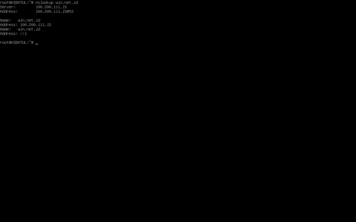
3. Install paket bernama apache2
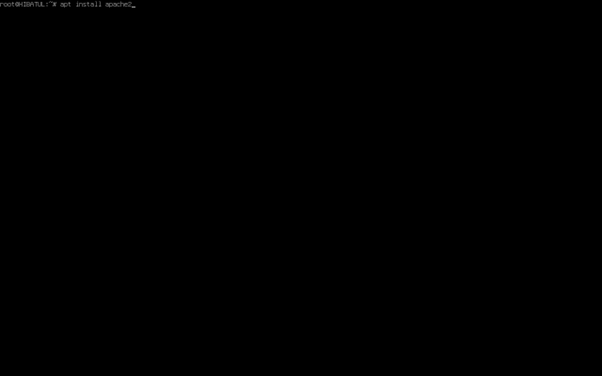
4. Buka chrome dan cari nama ip atau nama domain kita
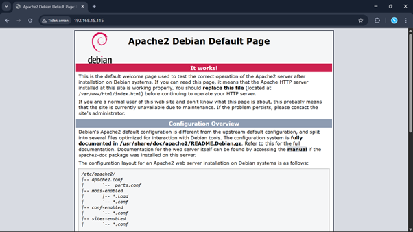
5. Untuk mengubahnya, saya menghapus file index dan menggantinya di dalam direktori web
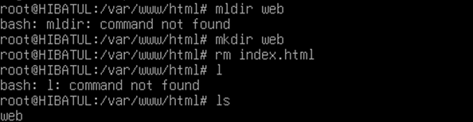
6. Setelahnya gunakan perintah ini untuk mengatur lokasi file yang akan berjalan di chrome
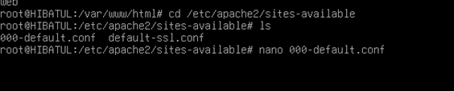
7. Ubah isi file tersebut menjadi
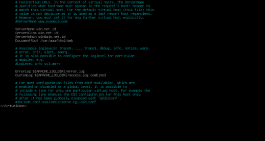
8. Kemudian saya mengisi file index.html di direktori web menjadi
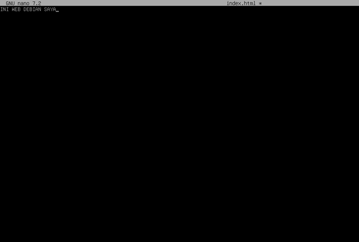
9. Setelahnya restart apache2
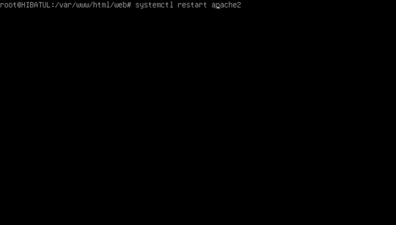
10. Untuk mengecek apakah berhasil, kembali cari ip atau nama domain di chrome
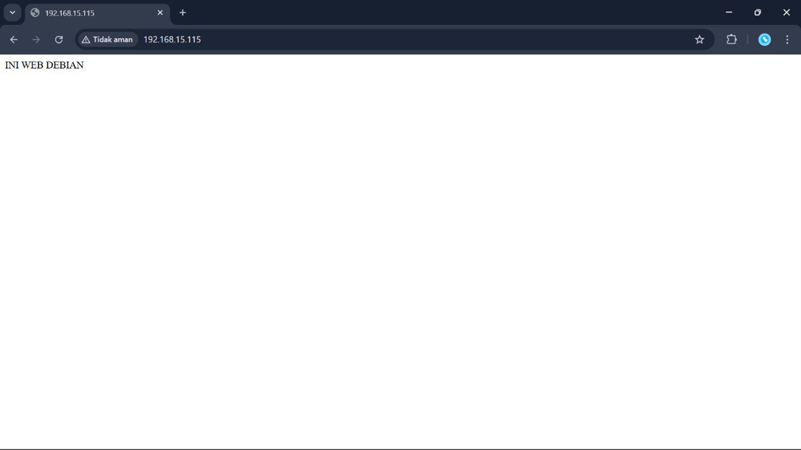
11. Setelahnya atur izin menjadi 777
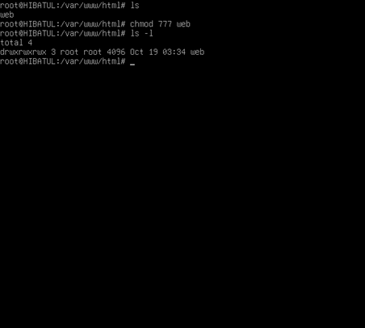
12. Kemudian buka Visual Studio Code dan install ekstensi Remote -SSH
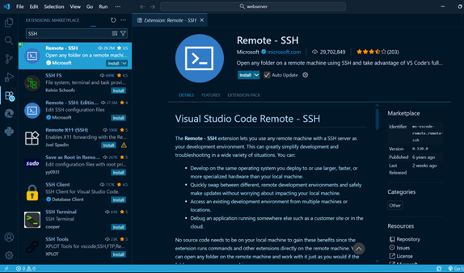
13. Kemudian atur Hostname sebagai ip dan user sebagai username Debian
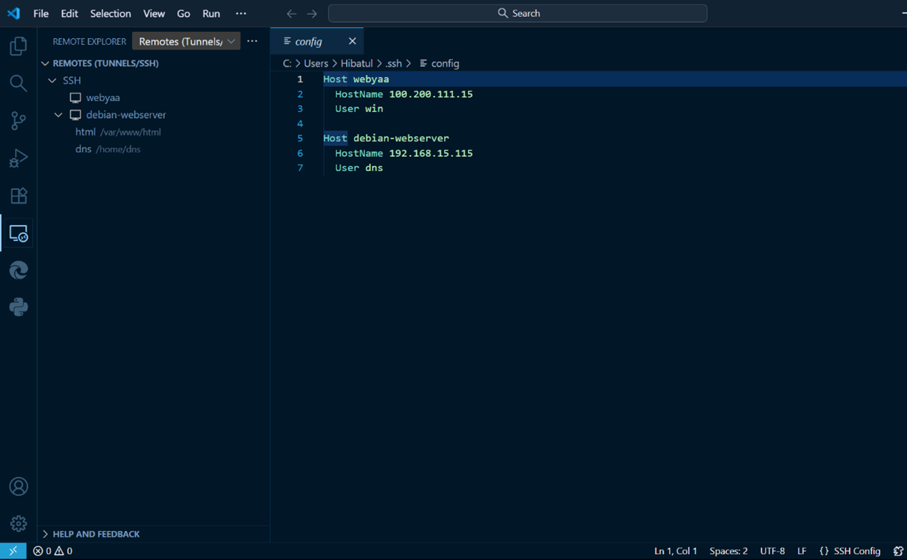
14. Apabila sudah, jalankan remote dan masukkan password
15. Setelahnya pilih direktori dimana kita menyimpan file yang akan ditampilkan di chrome
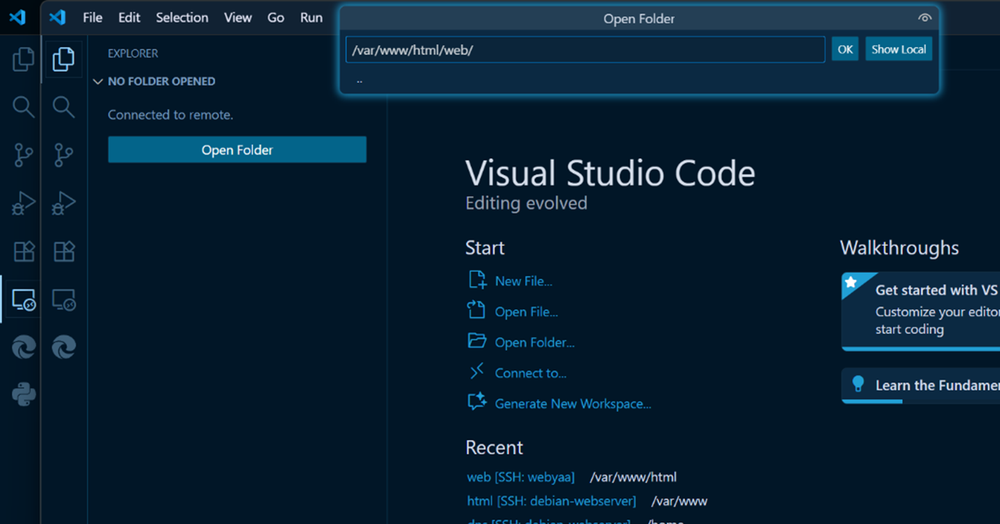
16. Lakukan proses coding seperti biasanya